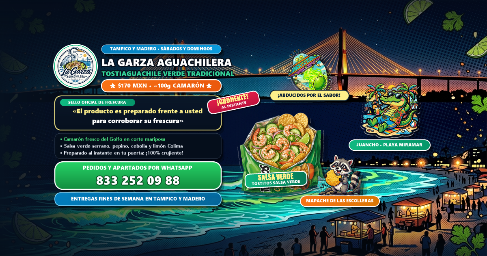

📘 Portada Facebook Safe Zone
1200 x 630 px
Portada Oficial Facebook — Pop Costeño Miramar
Composición panorámica adaptada a Safe Zone con Juancho, OVNIs y Mapache.

🔥 HOOK DE APERTURA: "¡Renovamos la casa! En La Garza Aguachilera arrancamos temporada con todo el sabor de Tampico y Miramar 🐊🛸🦝" ¡Bienvenidos a la página oficial de La Garza Aguachilera! 🦐🌊🔥 Llegó a Tampico y Ciudad Madero el Tostiaguachile Verde Tradicional más reportado de la zona conurbada: camarón fresco del Golfo en corte mariposa, chile serrano bravo, pepino crujiente, cebolla morada y abundante limón sobre una bolsa de auténticos TOSTITOS SALSA VERDE. ✨ EL PRODUCTO ES PREPARADO FRENTE A USTED PARA CORROBORAR SU FRESCURA. Llevamos hielera con termómetro a 0°C-4°C y mesa plegable directo a tu puerta para que disfrutes de mariscos de máxima calidad y tostitos 100% crujientes. 💰 Solo $170 MXN la bolsa bien reportada. 🛵 Entregas a domicilio SÁBADOS y DOMINGOS (anunciamos las rutas de entrega en nuestras redes sociales). 📍 Base de salida: Colonia Flores, Tampico, Tamaulipas. 📲 ¡Aparta tus bolsas para el fin de semana por WhatsApp al 833 252 09 88! https://wa.me/528332520988 #Tampico #CiudadMadero #LaGarzaAguachilera #Tostiaguachiles #PlayaMiramar #Juancho #MariscosTampico